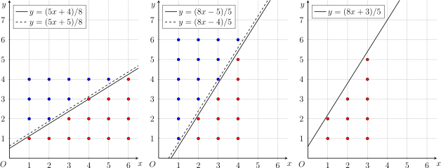

Thuật toán giống Euclid
Giới thiệu
Thuật toán Euclid kiểu mới do Hong Huadun đề xuất trong chia sẻ trại đông 2016. Nó thường dùng để giải các bài toán tổng dạng
(theo chỉ số \(i\)). Ý tưởng chính là tận dụng cấu trúc đệ quy của phân số để quy về bài toán nhỏ hơn, giải bằng đệ quy. Vì cấu trúc đệ quy của phân số có liên hệ trực tiếp với thuật toán Euclid (xem liên phân số), nên phương pháp này được gọi là thuật toán Euclid kiểu mới.
Vì liên phân số và cây Stern–Brocot cũng mô tả cấu trúc đệ quy của phân số, nên các bài toán giải được bằng Euclid kiểu mới thường cũng giải được bằng các phương pháp đó. So với chúng, Euclid kiểu mới thường dễ hiểu và cài đặt gọn hơn.
Thuật toán Euclid kiểu mới
Ví dụ đơn giản nhất là bài toán:
trong đó \(a,b,c,n\) đều là số nguyên dương.
Cách giải đại số
Trước hết, lấy \(a,b\) mod \(c\) để đưa về \(0\le a,b<c\):
Xét bài toán sau khi chuyển đổi. Đặt
Khi đó có dạng tổng kép:
Đổi thứ tự tổng, cần tính phạm vi \(i\) ứng với mỗi \(j\). Biến đổi điều kiện:
Suy ra:
Đặt \((a',b',c',n')=(c,c-b-1,a,m-1)\), ta quay lại trường hợp \(a'>c'\).
Kết hợp hai bước, trong quá trình \((a,c)\) liên tục lấy modulo rồi hoán đổi cho đến \(a=0\). Điều này tương tự phép chia Euclid, nên gọi là thuật toán Euclid kiểu mới. Độ phức tạp là \(O(\log\min\{a,c\})\).
Trong tính toán có thể có trường hợp \(m=0\), khi đó đệ quy bên trong sẽ có \(n=-1\). Điều này không ảnh hưởng kết quả. Nhưng nếu yêu cầu dừng ngay khi \(m=0\) thì độ phức tạp cải thiện thành \(O(\log\min\{a,c,n\})\).
Giải thích độ phức tạp
Dùng tương tự với thuật toán Euclid, ta dễ thấy độ phức tạp là \(O(\log\min\{a,c\})\). Cần giải thích thêm rằng nếu dừng khi \(m=0\) thì độ phức tạp cũng là \(O(\log n)\).
Đặt \(m=\lfloor(an+b)/c\rfloor\), ký hiệu \(S=mn\), \(k=m/n\). Chúng tương ứng với diện tích điểm lưới (xem mục sau) và độ dốc đường thẳng. Với \(n\) đủ lớn, gần đúng \(k\doteq a/c\).
Xét biến thiên của \(S\) và \(k\) trong thuật toán. Bước lấy modulo giữ \(n\) không đổi, \(k\) gần đúng từ \(a/c\) thành \((a\bmod c)/c\), tức \(k\to k-\lfloor k\rfloor\), và \(S\) cũng giảm theo \((k-\lfloor k\rfloor)\). Bước hoán đổi trục giữ \(S\) xấp xỉ không đổi, còn \(k\) thành nghịch đảo. Nếu sau hai bước \((k,S)\to(k',S')\) thì \(k'=(k-\lfloor k\rfloor)^{-1}\) và \(S'=(k-\lfloor k\rfloor)S\).
Vì \(1\le\lfloor k'\rfloor\le k'<\lfloor k'\rfloor+1\), nên sau hai vòng lặp, hệ số giảm ít nhất là
Do đó sau \(O(\log S)\) vòng lặp thuật toán kết thúc. Từ vòng 2 trở đi, \(S\) không vượt quá giá trị sau bước modulo ở vòng trước, mà giá trị đó xấp xỉ \(kn^2\) và \(k<1\), nên \(O(\log S)\subseteq O(\log n)\). Suy ra kết luận.
Cài đặt mẫu:
Cài đặt mẫu（Library Checker - Sum of Floor of Linear）
1 2 3 4 5 6 7 8 9 10 11 12 13 14 15 16 17 18 19 20 21 | |
Trực quan hình học
Thuật toán này cũng có thể hiểu theo hình học. Nó giải bài toán đếm điểm nguyên dưới đường thẳng.
Hình bên trái cho thấy tổng tương ứng số điểm nguyên dưới đường thẳng
nằm trên trục \(x\) (không gồm trục \(x\)) và có hoành độ trong \([0,n]\).

Đầu tiên, loại bỏ phần nguyên của hệ số góc và tung độ gốc. Đây tương đương tính riêng số điểm màu xanh ở hình giữa. Khi hệ số góc và tung độ gốc là số nguyên, các điểm xanh tạo thành hình thang với số điểm theo cấp số cộng, dễ tính. Sau khi loại, phần còn lại trùng với các điểm đỏ hình bên phải. Khi đó bài toán trở thành trường hợp hệ số góc và tung độ gốc đều nhỏ hơn 1. Vì chiều cao hình thang là \(n+1\) và đáy có độ dài \(\lfloor b/c\rfloor\) và \((\lfloor a/c\rfloor n+\lfloor b/c\rfloor)\), nên theo công thức diện tích, bước này gộp thành:
Sau đó, lật trục hoành và tung. Như hình trái, các điểm đỏ và xanh tạo thành một lưới chữ nhật \(n\times m\) với \(m=\lfloor(an+b)/c\rfloor\). Số điểm đỏ bằng tổng điểm trong chữ nhật trừ số điểm xanh. Sau khi lật, lưới điểm xanh ở nửa trái trở thành lưới điểm đỏ dưới một đường thẳng, và hệ số góc lớn hơn 1, quay về trường hợp đã xử lý.

Mấu chốt là xác định phương trình đường thẳng mới. Lật trục của đường \(y=(ax+b)/c\) cho đường \(y=(cx-b)/a\), nhưng đường này đi qua các điểm nguyên, dẫn đến đếm trùng. Vì vậy cần tịnh tiến xuống một chút, thành \(y=(cx-b-1)/a\), để các điểm dưới đường đúng là các điểm xanh trước khi lật.
Còn một chi tiết: đường mới có tung độ gốc âm, chưa về dạng ban đầu. Để đưa về tung độ không âm, tịnh tiến sang trái một đơn vị. Không bị thiếu điểm vì trước đó không có điểm có tung độ 0, nên sau lật cũng không có điểm có hoành độ 0. Cuối cùng được đường \(y=(cx+c-b-1)/a\), và giới hạn hoành độ từ \(m\) thành \(m-1\). Bước này gộp thành:
Đệ quy này đúng vì:
- Hệ số góc liên tục lấy phần thập phân rồi lấy nghịch đảo, tương đương khai triển liên phân số của \(k=a/c\). Độ dài khai triển của phân số hữu tỉ là \(O(\log\min\{a,c\})\), nên quá trình dừng trong \(O(\log\min\{a,c\})\) bước.
- Mỗi lần lật trục, hệ số góc < 1 nên trực giác cho thấy \(m<n\), tức phạm vi hoành độ giảm. Phân tích trước đó cho thấy sau mỗi hai vòng, \(n\) giảm ít nhất một nửa, nên kết thúc trong \(O(\log n)\) bước.
Do đó độ phức tạp với hệ số góc hữu tỉ là \(O(\log\min\{a,c,n\})\).
Bằng trực quan hình học tương tự, có thể mở rộng sang hệ số góc vô tỉ; xem ví dụ ở phần sau.
Ví dụ
【模板】类欧几里得算法
Nhiều truy vấn. Cho \(a,b,c,n\) nguyên dương, tính
Lời giải 1
Tương tự \(f\), ta suy ra biểu thức đệ quy của \(g,h\).
Trước hết dùng modulo đưa về \(0\le a,b<c\):
Sau đó, đổi thứ tự tổng. Đặt
Với \(g\):
Với \(h\):
Theo trực quan hình học, các tổng phi tuyến này tương ứng gán trọng số \(w(i,j)\) cho từng điểm \((i,j)\). Ngoài trọng số, quá trình tính vẫn giống nhau. Với trọng số, tổng quát có:
Bài này còn có điểm là \(g\) và \(h\) đệ quy đan xen. Vì vậy cần đệ quy đồng thời bộ ba \((f,g,h)\).
1 2 3 4 5 6 7 8 9 10 11 12 13 14 15 16 17 18 19 20 21 22 23 24 25 26 27 28 29 30 31 32 33 34 35 36 37 38 39 40 41 42 43 44 | |
[清华集训 2014] Sum
Nhiều truy vấn. Cho \(n\) và \(r\) nguyên dương, tính
Lời giải 1
Nếu \(r\) là số chính phương, khi \(\sqrt{r}\) chẵn thì tổng là \(n\), ngược lại tổng dao động giữa \(0\) và \(-1\) theo chẵn lẻ của \(n\). Xét \(r\) không là chính phương.
Để áp dụng Euclid kiểu mới, chuyển tổng về dạng quen thuộc:
với
Ở đây hệ số góc không còn hữu tỉ. Đặt
Xét hai trường hợp. Nếu \(k\ge 1\):
Bài toán trở thành hệ số góc < 1. Nếu \(k<1\), đặt \(m=\lfloor nk\rfloor\):
Đổi \(i\) và \(j\) đơn giản hơn vì đường \(y=kx\) không có điểm nguyên nào ngoài gốc. Cần viết lại dưới dạng \(f(a,b,c,n)\), tức tìm \(a',b',c'\) sao cho
Hữu tỉ hóa mẫu:
Suy ra
Vì vậy
Để tránh tràn số, mỗi lần chia \(a,b,c\) cho gcd. Quá trình này trùng với quá trình khai triển liên phân số của \(k\), nên nếu \(\gcd(a,b,c)=1\) thì các giá trị luôn trong phạm vi số nguyên. Dù \((a,b,c,n)\) không tràn, \(f(a,b,c,n)\) có thể vượt 64 bit trong dữ liệu bài này; để tràn tự nhiên là được, kết quả cuối luôn nằm trong \([-n,n]\).
Dù hệ số góc không về 0, độ phức tạp vẫn là \(O(\log n)\) theo phân tích trước đó.
1 2 3 4 5 6 7 8 9 10 11 12 13 14 15 16 17 18 19 20 21 22 23 24 25 26 27 28 29 30 31 32 33 34 35 36 37 38 39 40 | |
Fraction
Cho \(a,b,c,d\) nguyên dương, tìm phân số tối giản \(p/q\) thỏa \(a/b<p/q<c/d\) sao cho \((q,p)\) là nhỏ nhất theo thứ tự từ điển.
Lời giải
Bài này là ứng dụng kinh điển của cây Stern–Brocot, lời giải liên quan tại đây. Vì chỉ dựa vào cấu trúc đệ quy của phân số, nên cũng có thể giải bằng Euclid kiểu mới.
Nếu giữa \(a/b\) và \(c/d\) (không kể biên) tồn tại ít nhất một số nguyên, thì lấy \((q,p)=(1,\lfloor a/b\rfloor+1)\). Ngược lại, ta có
Từ đây biết phần nguyên của \(p/q\) là \(\lfloor a/b\rfloor\). Loại phần nguyên, lấy nghịch đảo để xác định phần thập phân. Đây chính là cách xác định liên phân số. Nếu đáp án là \(p/q\), độ phức tạp là \(O(\log\min\{p,q\})\).
Có một chi tiết: sau khi lấy nghịch đảo, phân số nhỏ nhất theo thứ tự từ điển có còn là nhỏ nhất trước đó không? Giả sử không, gọi \(p/q\) là nhỏ nhất theo \((q,p)\), nhưng \(r/s\neq p/q\) là nhỏ nhất theo \((p,q)\). Khi đó \(r<p\) và \(q<s\), suy ra
Khi đó \(r/q\) nhỏ hơn nghiệm hiện tại theo mọi thứ tự từ điển, mâu thuẫn. Do đó thuật toán đúng.
1 2 3 4 5 6 7 8 9 10 11 12 13 14 15 16 17 18 19 20 | |
Thuật toán Euclid tổng quát
Phần trước suy luận khá dài, và các tổng chủ yếu là đếm điểm nguyên dưới đường thẳng có trọng số. Phần này đưa ra phương pháp tổng quát hơn, trừu tượng hóa quá trình trên để giải nhiều bài hơn, gọi là thuật toán Euclid tổng quát. Nó vẫn dùng cấu trúc đệ quy của phân số, nhưng cách quy bài khác một chút.
Xét bài toán cổ điển:
với \(a,b,c,n\) nguyên dương.
Chuyển đổi bài toán
Với đoạn thẳng tham số \((a,b,c,n)\):
Định nghĩa một chuỗi ký tự \(S\) gồm \(U\) và \(R\) (gọi là chuỗi thao tác):
- Chuỗi có đúng \(n\) ký tự \(R\) và \(m=\lfloor(an+b)/c\rfloor\) ký tự \(U\);
- Số \(U\) trước ký tự \(R\) thứ \(i\) đúng bằng \(\lfloor(ai+b)/c\rfloor\), với \(i=1,\cdots,n\).
Theo trực quan hình học, từ gốc tọa độ, mỗi lần đi qua một đường lưới dọc thì ghi \(R\), mỗi lần đi qua một đường lưới ngang thì ghi \(U\):

Cần xử lý vài trường hợp đặc biệt:
- Nếu đi qua điểm nguyên (vừa lên vừa sang), phải ghi \(U\) trước rồi \(R\);
- Ở đầu chuỗi, ngoài số lần đi lên trong đoạn \((0,1]\), còn phải thêm \(\lfloor b/c\rfloor\) ký tự \(U\);
- Kết thúc chuỗi không được có \(U\) dư.
Nếu mô tả hình học chưa rõ, có thể xem định nghĩa đại số ở trên.
Ý tưởng của thuật toán Euclid tổng quát là xem \(U\) và \(R\) như các phần tử của một nửa nhóm đơn vị, chuỗi thao tác là tích của các phần tử, và kết quả liên quan đến tích đó.
Ví dụ, ta định nghĩa vector trạng thái \(v=(1,y,\sum y)\), biểu thị sau khi đi qua vài lần lưới, tung độ hiện tại và tổng cần tính. Ban đầu \(v=(1,0,0)\). Mỗi lần đi lên, \(y\) tăng 1, tức nhân phải bởi ma trận
Mỗi lần đi sang phải, tổng tăng thêm \(y\), tức nhân phải bởi
Vậy trạng thái cuối là \((1,0,0)S\), với \(S\) là tích các ma trận. Kết quả là thành phần thứ ba của trạng thái cuối.
Ngoài ma trận, có thể định nghĩa mỗi đoạn thao tác đóng góp \((x,y,\sum y)\), coi các thành phần như hàm của chuỗi \(S\): \((x(S),y(S),(\sum y)(S))\). Trong đó \(x(S)\) là số ký tự \(R\), \(y(S)\) là số ký tự \(U\). Định nghĩa tổng trên chuỗi:
với \(S_r\) là ký tự thứ \(r\) và \(S_{[1,r]}\) là tiền tố độ dài \(r\). Ví dụ:
\(\sum y\) chính là tổng các \(y\) tại mọi tiền tố kết thúc bằng \(R\), tức tổng các \(\lfloor(ai+b)/c\rfloor\) với \(i=1,\cdots,n\).
Ban đầu \(U=(0,1,0)\), \(R=(1,0,0)\). Định nghĩa phép nhân:
Trong đó:
Phép nhân này kết hợp được, có đơn vị \((0,0,0)\), nên tạo thành nửa nhóm đơn vị. Kết quả là thành phần thứ ba.
Hai cách đều đúng, nhưng vì ma trận có nhiều thông tin dư, hằng số lớn, nên cách thứ hai thực tế hơn.
Quy trình thuật toán
Khác với Euclid kiểu mới, Euclid tổng quát gộp thao tác theo lô. Gọi tích chuỗi là
Các bước:
-
Nếu \(b\ge c\), đầu chuỗi có \(\lfloor b/c\rfloor\) ký tự \(U\), tính và loại chúng. Khi đó số \(U\) trước \(R\) thứ \(i\) là
\[ \left\lfloor\dfrac{ai+b}{c}\right\rfloor - \left\lfloor\dfrac{b}{c}\right\rfloor = \left\lfloor\dfrac{ai+(b\bmod c)}{c}\right\rfloor. \]Tương đương đổi tham số từ \((a,b,c,n)\) sang \((a,b\bmod c,c,n)\):
\[ F(a,b,c,n,U,R) = U^{\lfloor b/c\rfloor}F(a,b\bmod c,c,n,U,R). \] -
Nếu \(a\ge c\), mỗi \(R\) có ít nhất \(\lfloor a/c\rfloor\) ký tự \(U\) trước nó, nên gộp thành \(U^{\lfloor a/c\rfloor}R\). Khi đó
\[ \left\lfloor\dfrac{ai+b}{c}\right\rfloor - \left\lfloor\dfrac{a}{c}\right\rfloor i = \left\lfloor\dfrac{(a\bmod c)i+b}{c}\right\rfloor. \]Tương đương đổi tham số từ \((a,b,c,n)\) sang \((a\bmod c,b,c,n)\):
\[ F(a,b,c,n,U,R) = F(a\bmod c,b,c,n,U,U^{\lfloor a/c\rfloor}R). \] -
Trường hợp còn lại cần lật trục, tức hoán đổi \(U\) và \(R\), nhưng tham số mới phải tính kỹ. Ta cần \((a',b',c',n')\) sao cho trong chuỗi trước, số \(R\) trước \(U\) thứ \(j\) là \(\lfloor(a'j+b')/c'\rfloor\), tổng có \(n'\) ký tự \(U\). Theo định nghĩa:
\[ n'=\left\lfloor\dfrac{an+b}{c}\right\rfloor = m, \]còn số \(R\) trước \(U\) thứ \(j\) là số lớn nhất \(i\) thỏa:
\[ \begin{aligned} \left\lfloor\dfrac{ai+b}{c}\right\rfloor < j &\iff \dfrac{ai+b}{c} < j \iff i < \dfrac{cj-b}{a} \\ &\iff i < \left\lceil\dfrac{cj-b}{a}\right\rceil = \left\lfloor\dfrac{cj-b - 1}{a}\right\rfloor + 1. \end{aligned} \]Do đó \(i = \lfloor(cj-b-1)/a\rfloor\). Suy luận giống phần Euclid kiểu mới, dùng tính chất hàm lấy phần nguyên.
Có hai chi tiết:
- Hệ số chặn \(-(b+1)/a\) âm. Nếu tịnh tiến đường thẳng sang trái một đơn vị, hệ số chặn thành không âm vì \((c-b-1)/a\ge 0\). Do đó tách đoạn đầu \(R^{\lfloor(c-b-1)/a\rfloor}U\), rồi chỉ hoán đổi phần còn lại.
- Sau khi hoán đổi, cuối chuỗi có \(U\) dư. Vì thế trước khi hoán đổi cần tách đoạn cuối \(R\), số lượng là \(n-\lfloor(cm-b-1)/a\rfloor\).
Sau khi bỏ đầu và cuối, số \(R\) trước \(U\) thứ \(j\) trở thành:
\[ \left\lfloor\dfrac{c(j+1)-b-1}{a}\right\rfloor - \left\lfloor\dfrac{c-b-1}{a}\right\rfloor = \left\lfloor\dfrac{cj+(c-b-1)\bmod a}{a}\right\rfloor. \]Nhớ rằng số \(U\) trước hoán đổi là \(m=\lfloor(an+b)/c\rfloor\). Việc tịnh tiến trái một đơn vị cần \(m>0\). Do đó có hai trường hợp:
-
Với \(m>0\), sau khi xử lý hai điểm trên, chuỗi sau hoán đổi tương ứng tham số \((c,(c-b-1)\bmod a,a,m-1)\):
\[ F(a,b,c,n,U,R) = R^{\lfloor(c-b-1)/a\rfloor}UF(c,(c-b-1)\bmod a,a,m-1,R,U)R^{n-\lfloor(cm-b-1)/a\rfloor}. \] -
Với \(m=0\), chuỗi chỉ có \(n\) ký tự \(R\), không cần hoán đổi:
\[ F(a,b,c,n,U,R) = R^n. \]Khác Euclid kiểu mới, trường hợp này cần xử lý riêng, nếu không sẽ gặp lũy thừa âm.
Nhờ đó, bài toán được giải đệ quy.
Giả sử phép nhân trong nửa nhóm đơn vị \(O(1)\). Nếu mọi lũy thừa dùng nhân nhanh, độ phức tạp là \(O(\log\max\{a,c\}+\log(b/c))\).1
Giải thích độ phức tạp
So với Euclid (kiểu mới), Euclid tổng quát chỉ thêm bước lũy thừa nhanh. Các phần còn lại có độ phức tạp \(O(\log\min\{a,c,n\})\). Ta cần ước lượng tổng chi phí lũy thừa.
Trừ vòng đầu, luôn có \(b<c\), nên mỗi vòng cần ba lần lũy thừa:
trong đó \(a_1=a\bmod c\), \(b_1=b\bmod c\), \(m=\lfloor(a_1n+b_1)/c\rfloor\). Hai hạng sau có ước lượng:
Nên cả hai là \(O(\log(c/a_1))\).
Mỗi vòng, tham số đổi từ \((a,\cdot,c,\cdot)\) sang \((c,\cdot,a\bmod c,\cdot)\), và chi phí vòng đó là
Cộng dồn qua các vòng, các hạng triệt tiêu, tổng là \(O(\log a+\log c)=O(\log\max\{a,c\})\).
Cộng thêm vòng đầu với \(U^{\lfloor b/c\rfloor}\) có \(O(\log(b/c))\), được tổng \(O(\log\max\{a,c\}+\log(b/c))\).
Thuật toán Euclid tổng quát có thể viết thành template, khi xử lý bài cụ thể chỉ cần thay kiểu T.
Cài đặt tham khảo
1 2 3 4 5 6 7 8 9 10 11 12 13 14 15 16 17 18 19 20 21 22 23 24 25 26 | |
Dùng Euclid tổng quát cho bài mẫu:
Cài đặt mẫu（Library Checker - Sum of Floor of Linear）
1 2 3 4 5 6 7 8 9 10 11 12 13 14 15 16 17 18 19 20 21 22 23 24 25 26 27 28 29 30 31 32 33 34 35 36 37 38 39 40 41 42 43 44 45 46 47 48 49 50 51 52 53 54 55 56 57 58 59 60 61 62 63 64 65 66 67 68 69 70 71 72 73 74 75 76 77 78 79 80 81 82 83 84 85 86 87 88 89 90 91 92 93 94 95 96 97 98 99 100 101 102 103 104 105 106 107 108 | |
Ví dụ
【模板】类欧几里得算法
Nhiều truy vấn. Cho \(a,b,c,n\) nguyên dương, tính
Lời giải 2
Để dùng template Euclid tổng quát, trước hết tách hạng \(i=0\). Phần còn lại coi như tính \(\sum y,\sum xy,\sum y^2\) với đoạn thẳng tham số \((a,b,c,n)\). Như đã nói, có hai cách chuyển chuỗi thao tác sang phần tử nửa nhóm.
Ma trận: vector trạng thái \((1,x,y,xy,y^2,\sum y,\sum xy,\sum y^2)\), khởi tạo \((1,0,0,0,0,0,0,0)\), hai thao tác:
Đáp án là ba thành phần cuối của vector thu được khi nhân các ma trận thao tác.
Cách này có hằng số rất lớn nên không qua được bài, chỉ nêu để hiểu.
Gộp đóng góp: đóng góp của một đoạn là \((x,y,\sum y,\sum xy,\sum y^2)\). Hai thao tác:
Gộp đóng góp:
Do đó định nghĩa phép nhân:
Có thể chứng minh các vector này tạo thành nửa nhóm đơn vị với đơn vị \((0,0,0,0,0)\).
Tổng quát:
Chỉ cần duy trì các bậc thấp hơn là tính được tổng quát.
1 2 3 4 5 6 7 8 9 10 11 12 13 14 15 16 17 18 19 20 21 22 23 24 25 26 27 28 29 30 31 32 33 34 35 36 37 38 39 40 41 42 43 44 45 46 47 48 49 50 51 52 53 54 55 56 57 58 59 60 61 62 63 | |
[清华集训 2014] Sum
Nhiều truy vấn. Cho \(n\) và \(r\) nguyên dương, tính
Lời giải 2
Xử lý riêng trường hợp \(r\) là chính phương như trước. Dưới đây chỉ xét \(r\) không là chính phương.
Có nhiều cách áp dụng Euclid tổng quát. Ví dụ định nghĩa biến đổi tuyến tính:
Phép nhân là hợp thành biến đổi. Đáp án là giá trị của biến đổi cuối cùng tại \(x=0\).
Hoặc định nghĩa đóng góp \(((-1)^y,\sum(-1)^y)\), hai thao tác:
Gộp đóng góp:
Dễ kiểm tra tạo thành nửa nhóm đơn vị với đơn vị \((0,1)\). Đáp án là thành phần thứ hai của tích.
Hai cách là tương đương: nếu viết biến đổi tuyến tính \(f(x)=u+vx\), thì hợp thành tương ứng đúng với phép nhân trên. Tức hai nửa nhóm này đẳng cấu.
Trong bài, tham số là \((k,n)\), với \(k\in\mathbf R\) là hệ số góc. Gọi tích chuỗi thao tác là \(F(k,n,U,R)\). Khi đó:
-
Nếu \(k\ge 1\), mỗi \(R\) có ít nhất \(\lfloor k\rfloor\) ký tự \(U\) trước, nên
\[ F(k,n,U,R) = F(k-\lfloor k\rfloor,n,U,U^{\lfloor k\rfloor} R). \] -
Nếu \(k<1\), hoán đổi \(U\) và \(R\), bỏ \(U\) dư ở cuối (tức \(R\) trước hoán đổi), nên
\[ F(k,n,U,R) = F(k^{-1},m,R,U)R^{n-\lfloor k^{-1}m\rfloor}. \]
Quá trình lặp \(k\) chính là khai triển liên phân số của \(\sqrt{r}\). Có thể dùng thuật toán PQa. Quá trình khai triển và Euclid tổng quát có thể thực hiện đồng thời.
Độ phức tạp vẫn là \(O(\log n)\).
1 2 3 4 5 6 7 8 9 10 11 12 13 14 15 16 17 18 19 20 21 22 23 24 25 26 27 28 29 30 31 32 33 34 35 36 37 38 39 40 41 42 43 44 45 46 47 48 49 50 51 52 53 54 55 56 57 58 59 60 61 | |
Bài tập
Bài mẫu:
- Library Checker - Sum of Floor of Linear
- Luogu P5170【模板】类欧几里得算法
- Luogu P5171 Earthquake
- Luogu P5172 [清华集训 2014] Sum
- Luogu P4132 [BJOI2012] 算不出的等式
- LOJ 138. 类欧几里得算法
- LOJ 6440. 万能欧几里得
- Luogu P5179 Fraction
- Codeforces 1182 F. Maximum Sine
Bài ứng dụng:
- Luogu P4433 [COCI 2009/2010 #1] ALADIN
- AtCoder Beginner Contest 372 G - Ax + By < C
- AtCoder Beginner Contest 313 G - Redistribution of Piles
- AtCoder Beginner Contest 283 Ex - Popcount Sum
- Codeforces 1098 E. Fedya the Potter
- Codeforces 868 G. El Toll Caves
Tài liệu tham khảo và chú thích
-
Thường trong các bài toán, \(b\) cùng bậc với \(a\) nên \(O(\log(b/c))\) có thể bỏ qua. Hơn nữa, nếu trước khi gọi Euclid tổng quát, ta thực hiện một vòng Euclid kiểu mới để loại ảnh hưởng của \(b\), thì chi phí lũy thừa nhanh có thể tránh được. Vì trong nhiều bài, dạng ban đầu của \(U\) đặc biệt, lũy thừa của nó có công thức đơn giản, không cần lũy thừa nhanh. Ví dụ trong bài, \(U^{\lfloor b/a\rfloor}\) chỉ cần thay phần tử ngoài đường chéo từ \(1\) thành \(\lfloor b/a\rfloor\). ↩
Last updated on this page:, Update history
Found an error? Want to help improve? Edit this page on GitHub!
Contributors to this page:sshwy, FFjet, qz-cqy
All content on this page is provided under the terms of the CC BY-SA 4.0 and SATA license, additional terms may apply